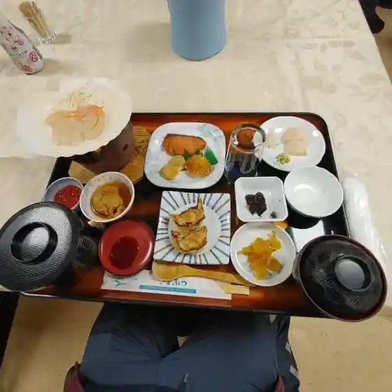
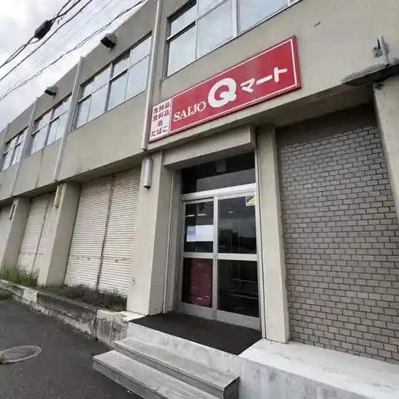
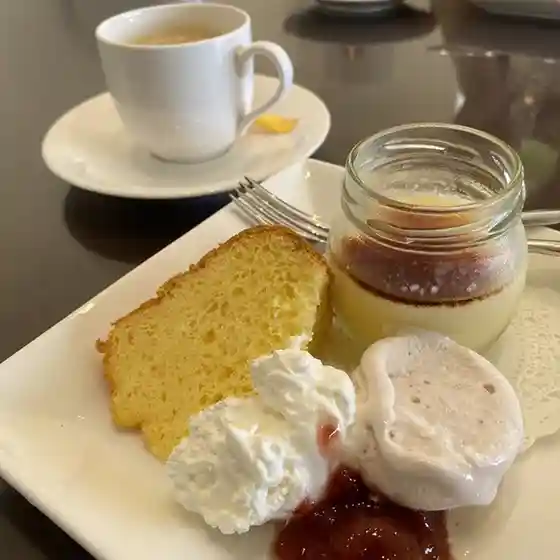
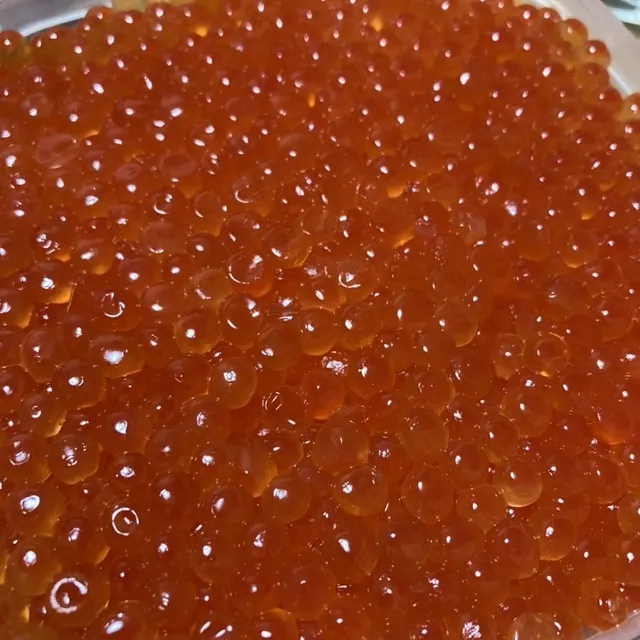
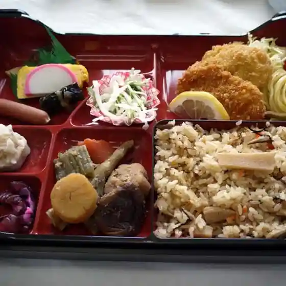
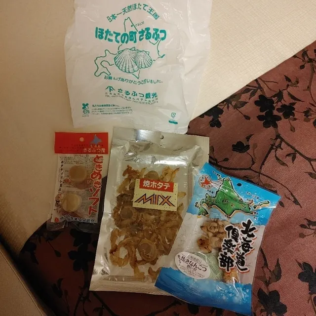

Sarufutsu
Sarufutsu · Hokkaido
Sarufutsu
Highlighted on the Hokkaido map.
Stay
笠井旅館
Kasai Ryokan
Ryokan inn in Sarufutsu, Hokkaido.
Dining
ホテルさるふつ ふるさとの家

Hoteru Sarufutsu Furusatono Ie
さるふつマリン

Sarufutsu Marin
Qマート

Q Maato
はました

Hamashita
工房&カフェ waco

Koubou & Kafe Waco
さるふつ観光

Sarufutsu Kankou
笠井旅館

Kasai Ryokan
ホテルさるふつ土産コーナー

Hoteru Sarufutsu Miyage Koonaa
やきたてパンの店 カシェ
Yakitate Pan No Mise Kashie
海鮮 ひとめぼれ オホーツク海陸直売所
Kaisen Hitomebore Ohootsuku Kairiku Chokubai Tokoro
つなぎ処 えん
Tsunagi Tokoro En
ホテルさるふつ ふるさとの家内 レストラン風雪
Hoteru Sarufutsu Furusatono Kanai Resutoran Fuusetsu
JFさるふつ直売店
Jf Sarufutsu Chokubai Mise
夢喰間
Yume Shoku Kan
ななかまどの会
Nanakamadono Kai
牛乳と肉の館
Gyuunyuu To Niku No Kan
さるふつまるごと館
Sarufutsumarugoto Kan
セイコーマート さるふつ店
Seikoomaato Sarufutsu Mise
道の駅 さるふつ公園
Michi No Eki Sarufutsu Kouen
Sights
Esanuka Sen
Esanuka Sen